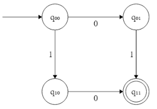
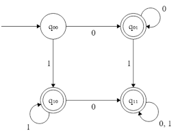
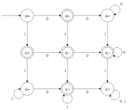
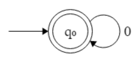

b
c
d

e
f

Based on content taught by Megan Monroe in Fall 2022. Written to help study for the Final Exam.
You are currently in learn mode. To switch to test mode, click here.
1. There are three characteristics of good axioms (or four if you count decidability). Two are that they are independent and consistent. What is the third?
2. All of the following statements about the differing sizes of infinity are true EXCEPT...
3. Which of the following are paradoxes? Select two options.
4. Gödel proved that if arithmetic is consistent, then it is necessarily _____, before taking it a step further and proving that the consistency of arithmetic cannot be proved within arithmetic.
5. The specification for the transition function of a Turing Machine is as follows:
\(Q \times \Gamma \to \Gamma \times \{L, R\} \times Q\).
Let's say \(T_1\) is a Turing Machine except that it has a slightly modified transition function spec:
\(Q \times \Gamma \to \Gamma \times \{R\} \times Q\).
Let's further suppose that \(T_2\) is a Turing Machine with this transition function spec:
\(Q \times \Gamma \to \Gamma \times \{L, S, R\} \times Q\).
(where \(S\) means "stay in place")
\(T_1\) is _____ a regular Turing Machine, and \(T_2\) is _____ a regular Turing Machine.
6. Consider the following specification for a Turing Machine on a tape with all characters initially as _:
\(Q = \{q_0, q_1\}\)
\(\Gamma = \{0, 1, \_\}\)
\(q_0\) is the initial state
Transition Function:
| \(Q\) | \(\Gamma\) | \(\Gamma \times \{L, R\} \times Q\) |
|---|---|---|
| \(q_0\) | \(\_\) | \(0, R, q_1\) |
| \(q_0\) | \(0\) | \(1, R, q_1\) |
| \(q_0\) | \(1\) | \(1, R, q_0\) |
| \(q_1\) | \(\_\) | \(0, L, q_0\) |
| \(q_1\) | \(0\) | \(1, R, q_0\) |
| \(q_1\) | \(1\) | \(1, R, q_1\) |
What does this Turing Machine print?
7. Consider the following tape configuration: \(0q_100\). Suppose that the transition function contained the following: \(q_1, 0 \to 1, R, q_2\). What would be the tape configuration after one "click"?
8. For a Turing Machine Decider, there are two alphabets: \(\Gamma\) (the tape alphabet) and \(\Sigma\) (the input alphabet). What is the relationship between them?
9. What is the complement of \(A_{TM}\)?
10. Suppose we know that \(L_1\) is TM undecidable. How would we prove that \(L_2\) is also TM undecidable?
11. What is Rice's Theorem?
12. Which of the following is correct regarding languages decidable by a Turing Machine vs. a Linear Bound Automaton?
13. Suppose that \(L_1\) is mapping reducible to \(L_2\). Which of the following is/are true? Select all that apply.
Do not assume typos in this question.
14. Consider the following specification for a Finite State Automaton:
\(Q = \{q_0, q_1\}\)
(\(q_0\) is the starting state)
\(\Sigma = \{0, 1\}\)
Transition function:
| \(Q\) | \(\Sigma\) | \(Q\) |
|---|---|---|
| \(q_0\) | \(0\) | \(q_1\) |
| \(q_1\) | \(1\) | \(q_0\) |
What gets printed?
15. A language that can be recognized by a Finite State Automaton...
16. Suppose that the input alphabet of an FSA is \(\{0, 1\}\). Let \(L_1\) be the language of all strings containing exactly one \(0\), and let \(L_2\) be the language of all strings containing exactly one \(1\). Which of the following FSAs correctly recognizes the union of \(L_1\) and \(L_2\)?
17. Based on the Pumping Lemma, if \(L\) is a regular language, then there exists a pumping length \(p\) such that any input string longer than \(p\) can be split into sections \(x\), \(y\), and \(z\) such that... (select all that are true)
18. From every nondeterministic finite state automaton with \(n\) states, you can construct an equivalent deterministic finite state automaton with a maximum of _____ states.
19. Consider the finite state automaton and the incomplete specification for a Context-Free Grammar below. What string(s) would you need to pair with the variable \(A\) (filling in the blank) to make the CFG recognize the same language as the FSA?
CFG:
\(V = \{S, A\}\)
\(\Sigma = \{0, 1\}\)
\(S\) is the "start" variable
Rules:
\(S \to A\)
\(A \to \_\_\_\_\_\)
FSA:
20. For a set of rules in a Context Free Grammar to be in Chomsky-Normal Form, each variable is paired with...
21. Suppose that \(L\) is a context-free language, and let \(p\) be the pumping length. Let some input \(w\) be split into five sections \(uvxyz\) in a way that satisfies the Pumping Lemma. Which of the following statements is not necessarily true according to the Pumping Lemma?
22. Let \(L = \{ 0^a1^a0^b1^b\) for any \(a,b > 0 \}\). \(L\) is...
23. A finite state automaton with one stack has _____ a finite state automaton with two stacks, which has _____ a finite state automaton with three stacks.
24. Suppose that a problem is decidable in non-deterministic polynomial time. We can conclude with this information that it is
"not necessarily" means "may or may not be"
25. True, False, or Unknown: The Marriage Problem is NP-Hard.
26. Suppose that \(P_1\) and \(P_2\) are problems, and we already know that \(P_2\) is NP-Hard. How would we prove that \(P_1\) is also NP-Hard?
27. Let \(f\) be a function that maps \(\langle \phi \rangle\) to \(\langle G \rangle\), and suppose that \(f\) is used to show that \(L_1\) is mapping reducible to \(L_2\).
One option for a case analysis of such a reduction is to show that \(\langle \phi \rangle \in L_1 \to f \langle \phi \rangle \in L_2\) and that \(\langle \phi \rangle \notin L_1 \to f \langle \phi \rangle \notin L_2\). This is the "in-in, out-out" method.
Another option is the "in-in, in-in" method. This involves showing that \(\langle \phi \rangle \in L_1 \to f \langle \phi \rangle \in L_2\) and that _____.
Fill in the blank.
28. Suppose that \(L_1\) and \(L_2\) are NP-Complete. We know that all of the following languages MUST be NP-Complete EXCEPT...
29. What is HAMPATH?
G is a directed graph in all of these options.
30. All of the following are true statements regarding PSPACE/NPSPACE EXCEPT...
31. Suppose that we have just enough qubits to make it possible for a machine to be in 32 states at once with different probability densities. Let's further suppose that the machine is indeed in 32 states at once. How many qubits would we need to observe to cause the machine to be in only 16 states at once?